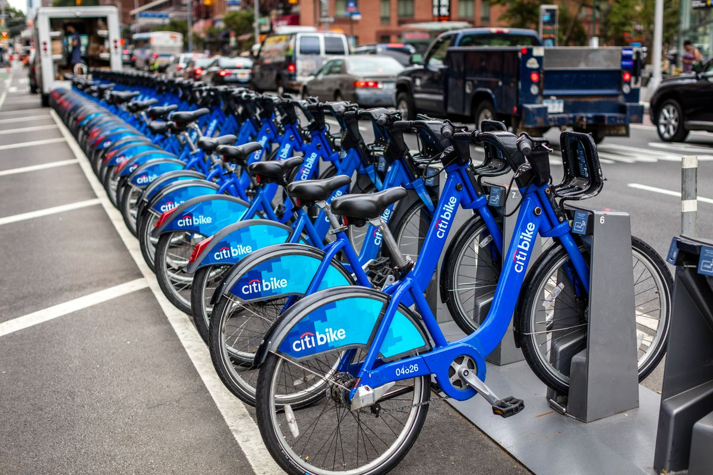

February, 2025
Developed a complete pipeline to predict hourly taxi ride demand across 260+ NYCity locations. Automated data collection, cleaning, and transformation, then trained LightGBM models for forecasting.
Deployed interactive STREAMLIT DASHBOARDS:
Citi Bike Ride Forecast Dashboard,
Prediction Error Tracker
for real-time predictions and integrated visual analytics to monitor trends and model accuracy, achieving a 15% improvement in performance.

February, 2025
Built a real-time NYC taxi demand forecasting system for 260+ locations using AWS (Lambda, S3, Glue, Athena, RDS).
The pipeline automates data ingestion, transformation, and hourly prediction using LightGBM models tracked via MLflow.
Deployed an interactive Streamlit dashboard on Elastic Beanstalk for live forecasts and historical trend analysis, integrated with
Power BI
for advanced visual analytics.
November, 2024
This project replicates the SP25_Taxi ride demand forecasting pipeline within the Snowflake ecosystem, utilizing its built-in scalability and performance.
All data transformations and feature engineering were performed using Snowflake SQL, with hourly predictions stored in structured tables for historical trend analysis and model evaluation.
Interactive dashboards built inside Snowflake provide real-time insights into ride patterns, forecast accuracy, and location-level demand across NYC zones.
Python scripts with environment-based configuration automate the prediction workflow using the Snowflake connector.
November, 2024
This project explores the implementation and optimization of neural networks for classification tasks using datasets such as MNIST (handwritten digits) and CelebA (celebrity face attributes).
The focus of this work is to experiment with different hyper-parameters such as the number of hidden units and lambda values to optimize the performance of the model.
This project predicts life expectancy using PySpark's distributed data processing. A Streamlit-based interface enables real-time interaction for prediction and visualization. It demonstrates scalable data preprocessing and ML model deployment.
This project applies machine learning models to forecast the severity of COVID-19 symptoms based on clinical and demographic data, assisting in patient prioritization and healthcare resource optimization.

A database-backed LMS that automates book lending, returns, and record-keeping. It features analytics for usage trends and includes a web interface to manage inventory and track user activity efficiently.
This project analyzes global life expectancy trends from 2000 to 2015, using health, demographic, and economic data from a Kaggle dataset.
The primary goal is to identify key factors influencing life expectancy and build predictive models to estimate it.
By highlighting disparities between developed and developing countries, this project provides insights into improving global health outcomes.
In this project,I built a Power BI dashboard to explore HR data and understand key attrition factors. The data, sourced from Kaggle, was combined into a single Excel file and imported into Power BI, where I performed data cleaning (handling missing values, removing duplicates, and correcting spelling errors) and used Power Query to transform the data. After establishing relationships between tables and adding numerical attrition columns, as well as bins for age and salary, I created interactive visuals to reveal insights such as overall attrition, tenure patterns, salary distributions, and performance ratings.
The project concludes with a dynamic dashboard that enables stakeholders to filter by gender, department, and other factors for more targeted analysis.

This project is a Python-based price tracking system designed to help users monitor the prices of Amazon products on their wishlist. The system scrapes product data (title and price) from Amazon, logs the information into a CSV file, and sends email notifications if the price of a product drops below a specified threshold.
The script is set up to run automatically every day using Task Scheduler (Windows) or cron (Linux/macOS), ensuring that the user is always up to date with the prices of their wishlisted products.
In this project, we focus on cleaning a raw Excel dataset titled "layoffs" and performing Exploratory Data Analysis (EDA) using SQL.
The main objective is to prepare the dataset for further analysis by addressing issues such as missing values, duplicates, and irrelevant data, and then exploring the data to uncover useful insights.
This project provides a Python script for automatically sorting files in a directory based on their types (file extensions). The script moves files into folders named after their respective file types (e.g., .txt, .jpg, etc.).
Additionally, it includes functionality to undo the sorting by moving the files back to their original location.
This project involves web scraping to extract cricketer data and load them in an excel file using Python,Pandas,BeautifulSoup